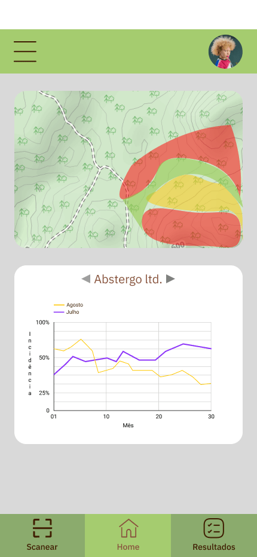

Scan Coffee
O objetivo deste projeto e que o cafeicultor possa analisar as folhas de café com o auxílio da IA, e possa identificar a presença da infestação de forma rápida e eficiente, sem depender da presença de profissionais e de um laboratório, otimizando o tempo de diagnóstico e assim poder iniciar um tratamento preventivo contra a infestação.
Tela Home
Tela de Escaneio

Tela de Resultado
Tela de Historico

Geolocalização é uma forma de localizar pessoas ou objetos por meio da tecnologia.
Ela se baseia em coordenadas geográficas (latitude e longitude), que são detectadas por satélites e então enviadas para o celular, tablet ou computador.
Inteligência Artificial (IA) é um ramo da ciência da computação que se concentra no desenvolvimento de sistemas e algoritmos capazes de realizar tarefas que normalmente exigem inteligência humana.
Essas tarefas incluem: Aprendizado; Raciocínio; Percepção; Compreensão e geração de linguagem natural; Reconhecimento de voz e imagem; Tomada de decisão; e Resolução de problemas complexos.

Computação em nuvem é o fornecimento de serviços de computação, incluindo servidores, armazenamento, bancos de dados, rede, software, análise e inteligência, pela Internet para oferecer inovações mais rápidas, recursos flexíveis e economias de escala.
Os recursos são disponibilizados conforme as necessidades dos usuários, de forma rápida e eficiente, ajudando a reduzir os custos operacionais.